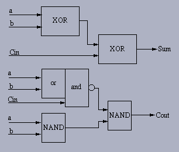

Input Format:
The input are Integers either in binary format or decimal. The
inputs need not be contiguous. The simulator counts the inputs and
correspondingly builds the OS Tree.
Overturned-Stairs Trees(OS Trees):
Multioperand adders are widely needed for designing multipliers, digital filters, and
inner-product computers.Overturned-Stairs Trees (OS Trees) acheive an squareroot(N) summing
time.Where N is number of operands. An important feature of OS Trees is their recursive
structure, which leads to a regular and compact design.

A OS tree of height J consists of I) a body of height J-1 II) a branch of height J-2 III) Connector
A branch of height J-2 consists of J-2 CSA's cascaded vertically. A connector is composed of
two CSA's which receive five inputs and give three outputs.
Comparison With Wallace Trees:
Wallace trees are theoretically fastest Multioperand adders. When adding multiple operands to
two numbers using carry save adders(CSA), They achieve the lower bound on the summing time
required by an N-to-2 reduction, O(log3/2N).However, Wallace Trees are very difficult to
implement because of their complex wiring.
N= 24, 18, 17, 13, 12, 11, 9, 8, 6, 4, 3, 2
However for the above values of N OS trees matches with wallace tree.
Delay Calculation:
In this simulation, the minimum delay of the final output
is calculated. Looking at the schematic diagram below:

in 3-2 adder Carry delay is smaller than Sum delay. In
this design we assumed that Sum delay is smaller than twice of carry delay
as well.
Assuming:
Ta: arrival time of input "a"
Tb: arrival time of input "b"
Tcin: arrival time of input "Cin"
Ts: time that Sum will be ready, considering arrival
time of inputs
Tcout: time that Carry out will be ready, considering
arrival time of inputs
final output delays will be calculated as follow:
Ts = Max{ ( Max(Ta,Tb) + Sum Delay )
, ( Tcin + Sum Delay/2 ) }
Tcout = [ Max (Ta, Tb,Tcin) ] + Carry Delay